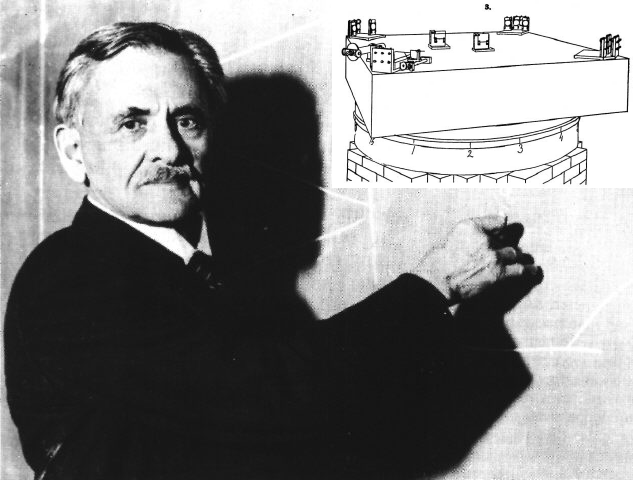
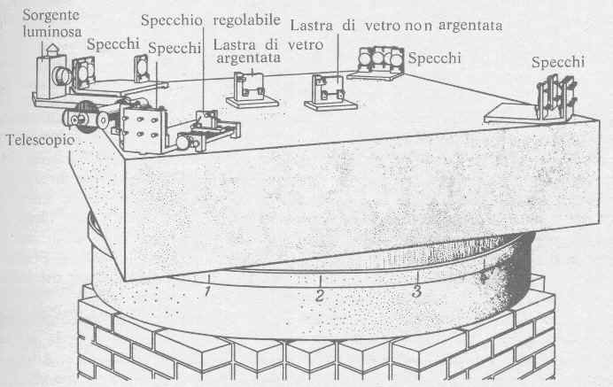
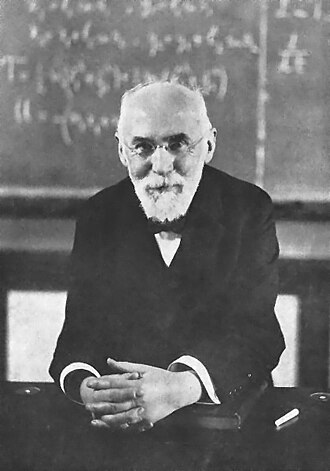
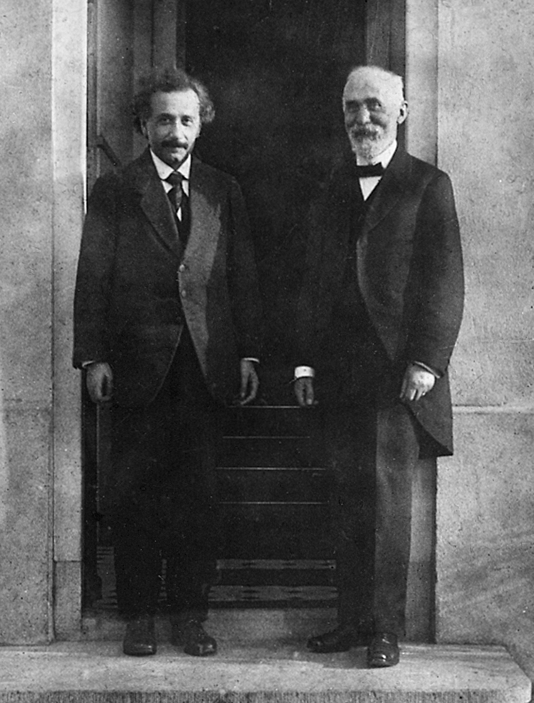

1. La tesis de Duhem-Quine: ninguna hipótesis va sola
La tesis de Duhem-Quine sostiene que una teoría nunca se confronta aisladamente con la experiencia. Cada predicción depende de una red completa de supuestos: hipótesis centrales, teorías auxiliares, instrumentos, condiciones iniciales, modelos matemáticos y criterios de lectura de resultados. Cuando aparece una dificultad empírica, no sabemos automáticamente qué parte exacta de esa red falló.
Esto modifica de raíz la imagen ingenua del método científico. Ya no podemos pensar la prueba como un duelo limpio entre una proposición y un hecho puro. Lo que se pone a prueba es siempre un conjunto articulado. Por eso la refutación nunca es tan directa como sugerían los modelos más simples del falsacionismo.
Si una predicción falla, podemos revisar la teoría principal, pero también una hipótesis auxiliar, una condición experimental, una calibración o una suposición matemática. La evidencia no decide sola dónde recae la culpa.
Lavoisier y Priestley: el holismo en la revolución química
El caso más ilustrativo del holismo es la revolución química del siglo XVIII. Joseph Priestley (Leeds, 1733 — Pennsylvania, 1804) aisló en 1774 un gas que permitía que las velas ardieran más intensamente y que los ratones vivieran más tiempo bajo una campana. Lo llamó "aire desflogistizado", porque en el marco de su teoría —la del flogisto, una sustancia hipotética que los cuerpos liberaban al quemar— ese gas era simplemente aquel que aún no estaba saturado de flogisto.
Antoine Lavoisier recibió el mismo gas de Priestley durante una visita en París en 1774, lo analizó cuantitativamente con balanza de precisión y lo llamó "oxígeno": el componente del aire que se combina con los metales al oxidarse y con el combustible al quemarse. Para Lavoisier, no existía el flogisto; la combustión era combinación con oxígeno, no liberación de una sustancia. La misma sustancia —el mismo gas— recibió dos nombres en dos marcos teóricos incompatibles. Priestley, hasta el final de su vida, mantuvo el lenguaje del flogisto y nunca aceptó la nueva química de Lavoisier, aunque usó sus experimentos. La tesis de Duhem-Quine ilumina por qué: refutar la teoría del flogisto no era un acto simple —requería revisar todo el sistema de hipótesis, lenguaje y experimentos que la sostenían. Lavoisier fue guillotinado en 1794 durante el Terror. El juez dijo: "La República no necesita sabios."
2. Una serie finita de puntos admite infinitas curvas
El programa sugiere un ejemplo muy potente: una serie finita de puntos en un plano puede ajustarse con una infinidad de curvas. Incluso si los puntos parecen “alineados”, siempre es posible trazar otras funciones que también pasen por ellos. Elegir la recta no es una obligación impuesta por los datos mismos, sino una decisión apoyada en criterios metateóricos como la simplicidad, la elegancia o la fecundidad del modelo.
Los datos restringen, pero no determinan por completo la teoría. Entre varias reconstrucciones posibles, la ciencia selecciona también según criterios de segundo orden.
— Lectura metateórica de Duhem-QuineLo que hacen los datos
Los puntos observados limitan qué teorías son compatibles. No cualquier explicación sirve: debe poder reconstruir de algún modo el comportamiento registrado.
Lo que hacen los criterios
Entre teorías compatibles, solemos preferir las más simples, generales o manejables. Esos criterios no vienen dados por el experimento mismo, sino por decisiones metodológicas y tradiciones científicas.
La simplicidad
La simplicidad no garantiza verdad, pero funciona como un principio ordenador. La ciencia la usa porque permite comparar, calcular y extender teorías de modo más fértil.
Por eso la elección entre teorías rivales nunca es puramente mecánica. Incluso en ciencias muy formalizadas, la práctica científica incluye elecciones interpretativas y valoraciones metodológicas que no pueden reducirse a “leer los datos”.
3. Las controversias son parte normal de la ciencia
Si una misma evidencia puede sostener más de una interpretación razonable, entonces las controversias científicas dejan de ser un accidente vergonzoso. Se vuelven un rasgo esperable de la práctica científica. Las controversias aparecen porque diferentes grupos ponderan de modo distinto la evidencia, la simplicidad, la coherencia con teorías previas, la fecundidad o la estabilidad instrumental.
En ese contexto, el consenso no es un reflejo automático de los hechos, sino una construcción histórica. La comunidad científica estabiliza acuerdos a través de publicaciones, discusiones, formación de especialistas, estandarización de instrumentos y resolución gradual de desacuerdos. Eso no vuelve arbitraria a la ciencia, pero sí la vuelve más humana e institucional de lo que suele mostrar el relato escolar.
Que existan disputas no implica que “todo da igual”. Implica que la racionalidad científica opera en un terreno más complejo: compara teorías, calibra evidencias y negocia criterios dentro de comunidades concretas.
4. El problema de los “experimentos cruciales”
Un experimento crucial sería, idealmente, aquel que decide de una vez por todas entre dos teorías rivales. Pero si toda colección de datos admite más de una interpretación posible, entonces desde un punto de vista estricto ese ideal se vuelve problemático. El agregado de datos no necesariamente clausura una controversia, porque siempre puede reabrirse la discusión sobre auxiliares, supuestos de fondo o modos de lectura.
No suelen “matar” instantáneamente una teoría rival, pero sí pueden inclinar progresivamente la balanza: hacer más costosa una defensa, volver más fértil una alternativa o modificar el consenso de la comunidad científica.
El experimento Michelson-Morley (1887): cuando un experimento "falla" y cambia la física
Albert Abraham Michelson (Strzelno, Polonia, 1852–Pasadena, 1931) y Edward Williams Morley (Newark, Nueva Jersey, 1838–West Hartford, 1923) trabajaban en el Case Western Reserve University de Cleveland. Su objetivo era medir el éter luminífero: el supuesto medio invisible e inmóvil a través del cual se propagaban las ondas de luz, análogo al agua para las olas sonoras. La física clásica del siglo XIX lo daba por descontado; si existía, la Tierra en su traslación orbital debía generar un "viento del éter" detectable. Michelson había diseñado un interferómetro de precisión extraordinaria, capaz de detectar diferencias de velocidad de la luz en distintas direcciones con una sensibilidad de un centésimo de la longitud de onda. El experimento fue realizado con meticulosidad sobre una losa de piedra flotando en mercurio para eliminar vibraciones. El resultado fue nulo: no había diferencia detectable en la velocidad de la luz en ninguna dirección.
Según la lógica popperiana, este experimento refutaba la teoría del éter. Pero la comunidad científica no abandonó el éter inmediatamente: durante dos décadas, físicos como Hendrik Lorentz (Arnhem, 1853–Haarlem, 1928) y George FitzGerald propusieron hipótesis auxiliares —la "contracción de Lorentz"— para salvar la teoría. Fue recién en 1905 cuando Albert Einstein reformuló el problema entero con la Relatividad Especial, haciendo el éter sencillamente superfluo: no era necesario asumir ningún medio, porque la velocidad de la luz era constante para todo observador. El experimento Michelson-Morley, lejos de "matar" instantáneamente una teoría, operó durante décadas como una anomalía incómoda —exactamente el tipo de situación que Kuhn describía como precursora de una revolución paradigmática.

Strzelno, 1852 — Pasadena, 1931
Primer Nobel de Física norteamericano (1907)

Lorentz: la hipótesis auxiliar que salvó el éter

Arnhem, 1853 — Haarlem, 1928
Físico holandés, Premio Nobel 1902, director del laboratorio de Leiden. Ante el resultado nulo de Michelson-Morley, Lorentz no abandonó el éter: propuso que los cuerpos materiales en movimiento a través del éter se contraen físicamente en la dirección del movimiento, exactamente lo suficiente para cancelar cualquier diferencia detectable en la velocidad de la luz. Era una hipótesis auxiliar ad hoc: diseñada específicamente para proteger el núcleo duro de la teoría.
En 1904 Lorentz formalizó esto con un conjunto de transformaciones de coordenadas que relacionaban el espacio y el tiempo de un observador en reposo respecto del éter con otro en movimiento:
Transformaciones de Lorentz (1904)
Para un sistema \(S'\) moviéndose a velocidad \(v\) respecto del éter a lo largo del eje \(x\):
\[x' = \gamma\,(x - vt)\] \[t' = \gamma\!\left(t - \frac{vx}{c^2}\right)\] \[y' = y \qquad z' = z\]donde el factor de Lorentz \(\gamma\) es:
\[\gamma = \frac{1}{\sqrt{1 - \dfrac{v^2}{c^2}}}\]Interpretación de Lorentz: \(x'\) y \(t'\) son coordenadas matemáticas convenientes pero no reales. El espacio y el tiempo "verdaderos" siguen siendo los del sistema en reposo absoluto respecto del éter. La contracción es un efecto físico real causado por el movimiento a través del medio.
La contracción de Lorentz no predecía ningún fenómeno nuevo ni observable más allá de los que ya explicaba. Solo servía para neutralizar la anomalía del experimento Michelson-Morley. Lakatos la llamaría una maniobra "degenerativa": protege el núcleo pero no amplía el horizonte explicativo del programa.
Einstein: las mismas ecuaciones, otra física

Las mismas ecuaciones, dos físicas incompatibles
En 1905, trabajando como examinador de patentes en Berna, Albert Einstein publicó su artículo "Zur Elektrodynamik bewegter Körper" ("Sobre la electrodinámica de los cuerpos en movimiento"). Tenía 26 años. No partió del problema del éter ni de intentar explicar el experimento Michelson-Morley: partió de dos postulados simples y radicales.
Relatividad Especial — Los dos postulados (Einstein, 1905)
Postulado I — Principio de relatividad
Las leyes de la física son las mismas en todos los sistemas de referencia en movimiento uniforme (inerciales). No existe un sistema "en reposo absoluto".
Postulado II — Constancia de la velocidad de la luz
La velocidad de la luz \(c\) en el vacío es la misma para todos los observadores inerciales, independientemente del movimiento de la fuente o del observador.
De estos dos postulados, Einstein derivó las mismas ecuaciones que Lorentz había propuesto como hipótesis auxiliar:
\[x' = \gamma\,(x - vt)\] \[t' = \gamma\!\left(t - \frac{vx}{c^2}\right)\] \[\gamma = \frac{1}{\sqrt{1 - \dfrac{v^2}{c^2}}}\]Interpretación de Einstein: \(x'\) y \(t'\) son las coordenadas reales del sistema \(S'\). No hay éter, no hay espacio absoluto, no hay tiempo absoluto. El tiempo y el espacio son relativos al observador. La dilatación temporal y la contracción de longitud no son efectos físicos "causados" por algo: son consecuencias geométricas de la estructura del espacio-tiempo. Dos eventos simultáneos para un observador pueden no serlo para otro en movimiento relativo.
Las ecuaciones son matemáticamente idénticas. Lorentz las propuso para salvar el éter frente a una anomalía. Einstein las derivó eliminando el éter por completo. El mismo formalismo matemático sostuvo durante años dos marcos teóricos incompatibles. Esto ilustra con precisión quirúrgica la tesis de Duhem-Quine: los datos y las ecuaciones no determinan por sí solos cuál es la teoría correcta. La decisión involucra principios, interpretaciones ontológicas y criterios que van más allá de la matemática.
La enseñanza filosófica de este punto es fuerte. La ciencia no progresa por golpes definitivos e instantáneos, sino por procesos de comparación, ajuste, discusión y reconstrucción de marcos teóricos. Precisamente ahí se ve la fuerza de la nueva filosofía de la ciencia: no idealiza la práctica científica, pero tampoco la reduce a irracionalidad. La muestra como una empresa crítica, histórica y colectiva.
La gran lección de esta unidad es que el cambio científico no se entiende solo mirando teorías o solo mirando datos, sino examinando la relación compleja entre marcos conceptuales, observación, comunidad y criterios de evaluación.
— Cierre de la Unidad 4